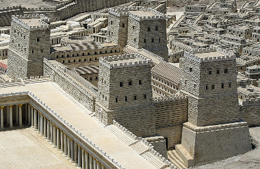

RTR: Imperium Surrectum
RTR: Imperium SurrectumGarrison
3 levels, each replacing the one before it — you upgrade in place rather than building alongside.
Local Garrisons → Waystations and Garrisons → Permanent Military Garrisons
Levels at a glance
| Level | Cost | Build time | Minimum settlement | Upgrades to | Excludes | |
|---|---|---|---|---|---|---|
| Local Garrisons | 3,200 | 2 | town | Waystations and Garrisons | Training Grounds | |
| Waystations and Garrisons | 6,400 | 5 | large town | Permanent Military Garrisons | Training Grounds | |
| Permanent Military Garrisons | 12,800 | 8 | city | — | Training Grounds |
Costs in denarii, build time in turns.
Local Garrisons

Garrisons improve public order and ensure the safe movement of goods and legions across the province.
A land is not truly Roman until it is paved, taxed, and patrolled by Roman men.
Conquest alone does not bring peace, only order enforced by Rome’s unbreakable will can secure lasting dominion. These garrisons are more than mere strongholds; they are Rome’s iron grip upon the land, ensuring that rebellious thoughts remain just that, thoughts. Here, disciplined legionaries and faithful auxiliaries stand ever ready to stop unrest, deter foreign incursions, and remind all who live within these lands that Rome is here to stay.
Yet these bastions of civilization serve more than a martial purpose. Traders find respite within their walls, knowing that Rome’s roads are safer under the watchful gaze of her soldiers. Messengers carrying the Senate’s decrees or a general’s orders pass through unhindered, their words travelling as swiftly as a marching column. Where Rome builds, Rome rules, and these fortifications stand as a testament to her ever-expanding domain.
A conquered land is never truly pacified until Rome’s will is firmly established. Fortified garrisons serve as a symbol of the Republic’s dominion, housing the soldiers necessary to enforce law and suppress unrest. These outposts are manned by legionaries and auxiliaries alike, ensuring swift response to rebellion or foreign incursion. These fortifications also serve a secondary purpose, providing a haven for traders and messengers, ensuring the safe passage of goods and information across the province. As Rome’s road network expands, these garrisons become essential to maintaining the Republic’s growing influence.
Wording varies by culture: 8 versions of this description exist in the game files.
| Cost | 3,200 denarii | Build time | 2 turns | Minimum settlement | town | Upgrades to | Waystations and Garrisons |
Requirements — all of these must hold before this level can be built.
- any faction
- the region does not have the hidden resource
nobuild(nobuilding) - Government Building
- not
building_present military_industrial_complex queued(not_mic)
Show the condition as the game files write it (the player's part)
factions { all, } and nobuilding and requires_gov and not_mic
What it does
- taxable income -12 to -8, scaling with settlement size
Show 3 effects that apply only in the circumstances shown
- +2 public order (law) — only when
not hidden_resource hills and not hidden_resource mountain_valley and not hidden_resource mountains - +3 public order (law) — only when
hidden_resource hills or hidden_resource mountain_valley or hidden_resource mountains - Additional law bonus in terrain types: hills, mountain valleys, mountains (these terrains have an inherent law penalty) — only when
hidden_resource hills or hidden_resource mountain_valley or hidden_resource mountains
Recruitment — unlocks 3 units. Which of them you can actually raise depends on your faction, your government and the region, exactly as the game files state it.
- Celtic Light Cavalry
- Celtic Spearmen
- Celtic Swordsmen
Excludes: building this rules out Training Grounds. Choose deliberately — this is not reversible by demolition in every case.
Waystations and Garrisons

Fortified waystations improve security, suppress unrest, and ensure safe passage for merchants and messengers.
A province at peace is a province well-garrisoned.
Rome's expansion is not merely a matter of conquest, but of control. A newly taken land is little more than a restless beast, growling beneath the yoke of civilization. To pacify such territories, the Republic does not rely on mere decrees, it builds. These fortified waystations serve as Rome’s ever-watchful eyes, ensuring that neither brigands nor rebellious thoughts take root in lands claimed by the eagle’s wings.
Within these walls, battle-hardened legionaries stand ready to stamp out unrest before it takes hold, their discipline an uncompromising testament to Roman order. But these fortifications do more than bristle with spears, they facilitate the steady march of progress. Here, weary merchants find security, messengers change mounts, and supplies are stockpiled for armies that must always be prepared to march. Under Rome’s careful watch, roads become arteries of trade, and a well-guarded province becomes a thriving one.
Wording varies by culture: 6 versions of this description exist in the game files.
| Cost | 6,400 denarii | Build time | 5 turns | Minimum settlement | large town | Upgrades to | Permanent Military Garrisons |
Requirements — all of these must hold before this level can be built.
- any faction
- the region does not have the hidden resource
nobuild(nobuilding) - Indirect Rule
- not
building_present military_industrial_complex queued(not_mic)
Show the condition as the game files write it (the player's part)
factions { all, } and nobuilding and gov_tier_2 and not_mic
What it does
- taxable income -22 to -18, scaling with settlement size
Show 4 effects that apply only in the circumstances shown
- +4 public order (law) — only when
not hidden_resource hills and not hidden_resource mountain_valley and not hidden_resource mountains - +5 public order (law) — only when
hidden_resource hills or hidden_resource mountain_valley - +6 public order (law) — only when
hidden_resource mountains - Additional law bonus in terrain types: hills, mountain valleys, mountains (these terrains have an inherent law penalty) — only when
hidden_resource hills or hidden_resource mountain_valley or hidden_resource mountains
Recruitment — unlocks 3 units. Which of them you can actually raise depends on your faction, your government and the region, exactly as the game files state it.
- Celtic Light Cavalry
- Celtic Spearmen
- Celtic Swordsmen
Excludes: building this rules out Training Grounds. Choose deliberately — this is not reversible by demolition in every case.
Permanent Military Garrisons

A permanent Roman garrison stands ready to enforce order, suppress rebellion, and guard the province.
A well-fortified camp is a legion’s second home and a rebel’s worst nightmare.
With Rome’s relentless expansion, temporary marching camps have given way to grander, more permanent fortifications. These Castra (military camp or fort) serve as the backbone of provincial security, imposing the rule of law upon conquered lands with all the subtlety of a catapult to the face. More than mere barracks, they are miniature cities, complete with granaries, forges, and temples to keep both Mars and Jupiter suitably appeased. Housing a full complement of legionaries, cavalry detachments, and engineers, these garrisons project the might of Rome across the land. Here, legionaries train ceaselessly within the walls, their disciplined drills a constant reminder to the locals that Rome is here to stay. Cavalry patrols ensure that neither brigands nor rebellious thoughts grow too bold, while engineers strengthen roads and fortifications, turning the province into an unbreakable cog in the great Roman machine. While the conquered might dream of throwing off their shackles, they had best dream softly, for the sentries hear everything, and Rome does not take kindly to insubordination.
More than simple defenses, these camps impose order upon the local populace. Watchful sentries patrol roads and countryside, ever vigilant for signs of rebellion or unrest. To the conquered, these fortresses are an unwelcome sign of subjugation, but to Rome, they are the foundation of stability and prosperity.
Wording varies by culture: 5 versions of this description exist in the game files.
| Cost | 12,800 denarii | Build time | 8 turns | Minimum settlement | city |
Requirements — all of these must hold before this level can be built.
- any faction
- the region does not have the hidden resource
nobuild(nobuilding) - Direct Rule
- not
building_present military_industrial_complex queued(not_mic)
Show the condition as the game files write it (the player's part)
factions { all, } and nobuilding and gov_tier_3 and not_mic
What it does
- taxable income -32 to -28, scaling with settlement size
Show 4 effects that apply only in the circumstances shown
- +6 public order (law) — only when
not hidden_resource hills and not hidden_resource mountain_valley and not hidden_resource mountains - +7 public order (law) — only when
hidden_resource hills or hidden_resource mountain_valley - +8 public order (law) — only when
hidden_resource mountains - Additional law bonus in terrain types: hills, mountain valleys, mountains (these terrains have an inherent law penalty) — only when
hidden_resource hills or hidden_resource mountain_valley or hidden_resource mountains
Recruitment — unlocks 3 units. Which of them you can actually raise depends on your faction, your government and the region, exactly as the game files state it.
- Celtic Light Cavalry (1 experience)
- Celtic Spearmen (1 experience)
- Celtic Swordsmen (1 experience)
Excludes: building this rules out Training Grounds. Choose deliberately — this is not reversible by demolition in every case.
What the shorthands in those conditions stand for (5)
| Shorthand | Stands for | Shorthand | Stands for | Shorthand | Stands for | Shorthand | Stands for |
|---|---|---|---|---|---|---|---|
gov_tier_2 | building_present_min_level governmentB gov2 or building_present_min_level governmentC gov3 | gov_tier_3 | building_present_min_level governmentC gov3 | nobuilding | not hidden_resource nobuild | not_mic | not building_present military_industrial_complex queued |
requires_gov | building_present governmentA or building_present governmentB or building_present governmentC or building_present governmentD |